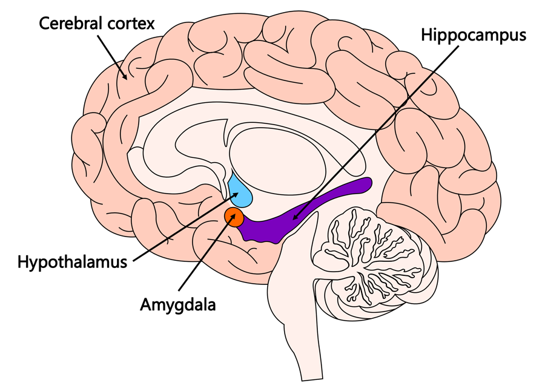

Neuroplasticity & the Growth Mindset
Discuss how understanding the principles of neuroplasticity benefits people.
Understanding of how the connections between neurones in the brain form, strengthen, weaken or prune helps us better understand how to more efficiently gain new skills and knowledge and have a more positive outlook on our capabilities.

What are some of the ways to increase your neuroplasticity?
Four great ways to increase neuroplasticity are addressed in the AGES Model, which is a cohesive learning structure produced by the Neuro Leadership Institute. AGES stands for-
-
Attention
- The hippocampus is crucial for the formation of new memories and therefore learning. The stronger the activation of the hippocampus, the more neural connections can form leading to the learning of and storage of new ideas as memories. When we are distracted, other parts of our brain are being activated which can lead to deactivation of the hippocampus. To most efficiently utilise the hippocampus, we should try to reduce distractions as much as possible so that our attention is drawn to what we are learning.
-
Generation
- Studies have shown that the hippocampus operates more like a web rather than a hard drive. By this we mean that rather than memory being stored in discrete folders of information, memory is stored by making multiple connections between the acquired information and information we have already learned. The thicker we make this web of connections, the stronger the memory becomes. Therefore, we should where possible try to relate new information in a context that we already understand rather than say learning a list of discrete facts devoid of context.
-
Emotion
- The hippocampus is connected to the amygdala, which is a structure in the brain responsible for processing emotions and for assigning emotional significance to memories. Connecting a memory with a strong emotion increases the strength of neural connections to that memory, making it more likely to be stored and recalled. Learning that can result in positive emotions such as joy or excitement improves the ability to store the new information.
-
Spacing
- New memories are first stored in the hippocampus as short term memories before they are eventually consolidated as long term memories, primarily in the cerebral cortex. The cerebral cortex is the outer layer of each of the lobes of the brain, where the majority of the brains grey matter can be found. Memories can be strengthened by reconsolidating the connections made in the cerebral cortex, however for this to take place, enough time must have passed for the initial consolidation from the hippocampus to the cerebral cortex. For example if you cram for a test, all of that knowledge will be stored in the hippocampus as short term memory. This may be good enough to pass the test, however it will be harder to recall the information later as the memories will not have been reconsolidated within the cerebral cortex. Spacing is the opposite of cramming, trying to have sufficient intervals between learning sessions so that the reconsolidation of long term memory can occur. This helps with recall of learned information.
Discuss how you might engage with the principles of neuroplasticity for your benefit.
- Reduce distractions- set aside a period for study when you will not be disturbed. Try to maintain a calm working space. I will be trying not to listen to podcasts whilst I am learning!
- Make learning relatable- try to come up with examples of how to use newly learned material in the context of something you know well. I for example have been trying to where possible use various elements from fantasy stories when making coding examples, trying to think about when each new function or method may be used in such a setting.
- Make learning enjoyable- try to come up with ways to feel excitement and accomplishment with your learning. Fortunately some of the tasks set for us such as the JavaScript Café and Kata have been made with that in mind and have a series of objectives to tick off (with great satisfaction!). I have chosen to make a blog which makes me excited to look at (even if the layout is not very traditional for a blog!). For example I have made the banner on each page different to try and tell a story of adventure!
- Spacing- aim to set aside smaller periods of learning with gaps between rather than cramming all your learning at once. I will try to do smaller chunks per day rather than leaving it all for particular days. This is somewhat difficult whilst I am working part time but I will aim to do smaller sections earlier in the week so that I do not have to finish everything at the weekend!
Link to a resource that you found particularly useful or engaging.
For more information on the AGES Model visit-
https://neuroleadership.com/your-brain-at-work/ages-model-for-learning